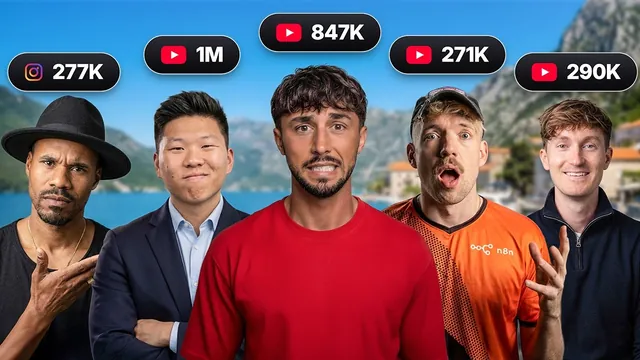

경쟁자들과 몬테네그로에서 보낸 일주일

원본 영상 보기 →
- "AI 오퍼레이팅 시스템"이라는 프레이밍
- 부서별 특화 학습 구조
- 경쟁자를 커뮤니티로 묶는 전략
한 줄 요약
몬테네그로에서 열린 AI 서밋 브이로그로, 튜토리얼보다는 "회사 전체를 Claude Code 하나로 운영하는 AI 오퍼레이팅 시스템" 컨셉과 크리에이터 커뮤니티 이벤트의 운영 구조를 보여주는 영상이다.
전체 내용 정리
목표는 "회사 운영을 위해 열어야 할 앱이 하나만 남는 것"
행사 첫 세션에서 주최 측은 참가자들에게 "AI 오퍼레이팅 시스템"을 구축시킨다. 핵심 목표는 Claude Code(코딩 에이전트)를 회사를 운영하는 데 필요한 유일한 곳으로 만드는 것이다. 모든 툴을 하나로 통합해서 여러 앱을 왔다 갔다 하지 않아도 되게 만들고, 필요한 맥락과 연동(integration)을 다 심어두면 유연한 업무를 훨씬 빠르게 처리할 수 있다는 게 골자다. 코딩 에이전트를 쓰기 때문에 아이디어가 떠오르는 즉시 소프트웨어·코드의 전체 역량을 동원해 문제를 풀 수 있다는 점도 강조된다.
오전엔 기본 세팅, 오후엔 부서별 특화
오전에는 참가자 전원이 동일한 기본 "회사 OS"를 설치했다. 이미 자기만의 시스템을 갖추고 있던 참가자들도 어떤 부분이 부족했는지 비교하며 개선점을 찾았고, 몰랐던 스킬·커넥터를 새로 알게 됐다는 반응이 나왔다. 오후에는 롱폼, 숏폼, 오퍼레이션(운영) 등 소그룹으로 나뉘어 각 분야에 특화된 워크플로우를 배웠다. 연사들이 각자 자신의 실제 업무에 쓰는 스킬과 시스템, 워크플로우를 정리한 다운로드 가능한 패키지를 참가자들에게 나눠줬다.
테이블별로 나뉜 실전 노하우 공유
행사장에는 주제별 테이블이 배치됐다. 운영팀은 커스텀 대시보드 구축법을, 세일즈·오퍼 테이블에서는 세일즈 전문가들이 노하우를 공유했다. 컴플라이언스 테이블에서는 AI 시스템을 만들거나 고객용 신제품을 개발할 때 규정을 어떻게 준수할지 다뤘다. 스폰서십 테이블에서는 현재 수익성이 매우 좋은 스폰서십 시장에 어떻게 진입할지 브리핑이 이뤄졌다. 자동화 전문가 테이블은 각자 업무에 쓰는 실제 자동화 워크플로우를, AI 엔지니어·크리에이터 테이블은 AI 시스템과 소프트웨어를 만드는 법을 공유했다. 롱폼 테이블에서는 유튜브 채널을 키운 크리에이터들이 실제 제작 프로세스를 설명했다.
스폰서십으로 돈을 버는 방법도 별도로 다뤄졌다
스폰서십 테이블을 맡은 진행자는 이 행사 자체도 스폰서를 유치했다며, 스폰서십으로 큰 돈을 버는 방법에 대한 노하우를 공유했다고 소개한다.
콘퍼런스 이후는 네트워킹·경험 중심의 브이로그
공식 세션이 끝난 뒤에는 보트 투어, 저녁 식사, DJ 파티 등 네트워킹과 경험에 집중한 일정이 이어진다. 주최자는 2023년부터 서로 경쟁자로 볼 수 있었던 크리에이터들을 하나의 WhatsApp 그룹으로 묶어 주간 통화를 하게 한 것이 이런 행사로 발전했다고 설명하며, 다음 행사는 케이프타운에서 열릴 예정이라고 밝힌다.
핵심 인사이트
- "AI 오퍼레이팅 시스템"이라는 프레이밍: 여러 SaaS 도구를 흩어놓지 않고 코딩 에이전트(Claude Code) 하나에 맥락과 연동을 몰아넣어 "회사 운영의 단일 진입점"으로 만드는 접근은, 자동화 서비스를 파는 입장에서 고객에게 제안할 수 있는 명확한 상품 컨셉이다.
- 부서별 특화 학습 구조: 기본 세팅(오전) → 역할별 심화(오후)로 나누는 워크숍 설계는, 자동화 컨설팅이나 강의를 구성할 때 참고할 만한 구조다.
- 경쟁자를 커뮤니티로 묶는 전략: 같은 업계의 잠재적 경쟁자들을 WhatsApp 그룹으로 묶어 공동 이벤트로 발전시킨 사례는, 소규모 자동화 외주업자들 간의 네트워크 구축에 참고할 수 있는 모델이다.
오늘 당장 해볼 것
- 지금 쓰고 있는 자동화·업무 도구들을 한 곳에 나열해보고, 그중 코딩 에이전트(Claude Code 등)와 연동 가능한 것부터 하나씩 연결해본다.
- 자신의 업무를 롱폼/숏폼/운영처럼 역할별로 나눠보고, 역할마다 어떤 반복 작업이 있는지 목록을 만들어본다.
- 같은 분야에서 활동하는 동료·잠재적 경쟁자 2~3명과 정보 공유용 그룹을 만들어본다.